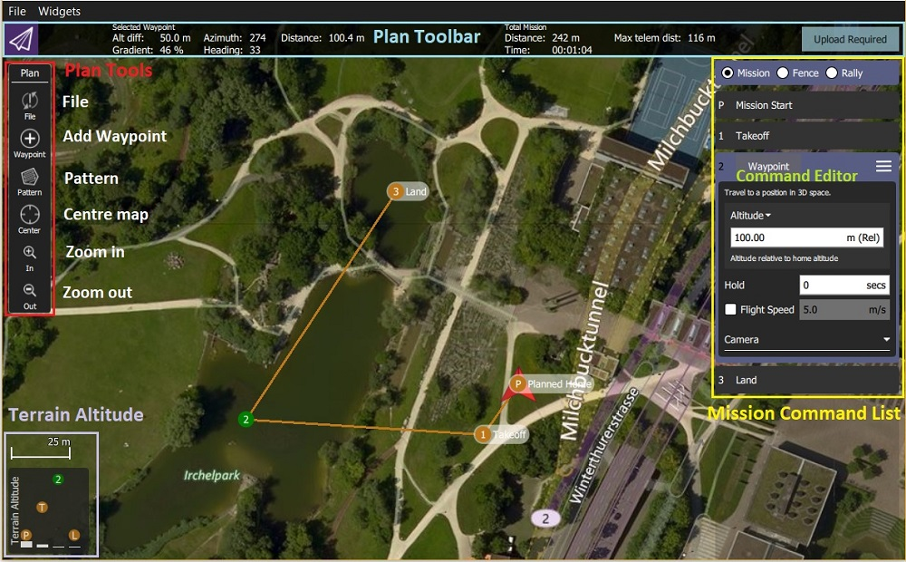
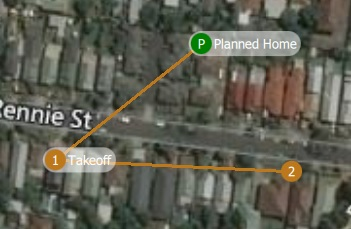
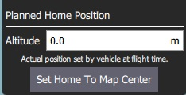
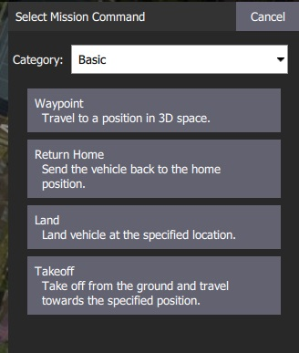
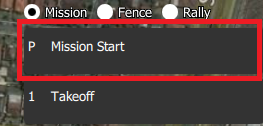
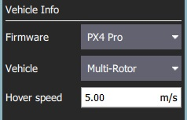

Plan Ekranı
Plan View, aracınız için otonom görevler planlamak ve onları araca yüklemek için kullanılır. Görev planlanıp araca gönderildiğinde, görevi gerçekleştirmek için Uçuş Ekranı'na geçillir.
Ayrıca eğer yazılım tarafından destekleniyorsa GeoFence ve Rally Points'leri ayalarmak için kullanılır.

Kullanıcı Arayüzü'ne Genel Bakış
Yukarıdaki ekran görüntüsü , Planlanan Ev konumundan (H) kalkışla başlayan basit bir görev planını gösterir, üç hedef noktadan geçer ve ardından son hedef noktaya (yani hedef noktası 3) iner.
Arayüzün temel elemanları şunlardır:
- Map: Planlanan Ev konumu dahil olmak üzere mevcut görev için numaralandırılmış konumları görüntüler. Noktaları seçmek için tıklayın (düzenlemek için) ya da konumlarını değiştirmek için sürükleyin.
- Plan Araçları: Önceki hedef noktaya göre halihazırda seçili olan hedef nokta için durum bilgisi ve tüm görevin istatistikleri (örn. Yatay mesafe ve görev süresi).
Max telem dist, Planlanan Ev konumu ile en uzak hedef nokta arasındaki mesafedir.- Bir cihaza bağlanıldığında bir Upload butonu da belirir ve planı araca yüklemek için kullanılabilir.
- Plan Araçları: Görevleri oluşturmak ve yönetmek çin kullanılır.
- Mission Command List/Overlay: Mevcut görevin öğelerinin listesini görüntüler (öğeleri düzenlemek için seçin).
- Terrain Altitude Overlay: Her görev komutunun göreceli yüksekliğini gösterir.
Size o anda seçili olan hedef noktasıyla ilgili bilgilerin yanı sıra tüm görevin istatistiklerini gösterir.
Görev Planlama
Genel bir bakış açısıyla, görev oluşturmanın aşamaları şunlardır:
- Plan Ekranı'nı açın.
- Göreve hedef noktalar veya komutlar ekleyin, gerektiği şekilde düzenleyin.
- Görevi araca yükleyin.
- Uçuş Ekranı'nı açın ve görevi gerçekleştirin.
Aşağıdaki bölümler, ekrandaki bazı ayrıntıları açıklamaktadır.
Planlanmış Ev Konumu
The Planned Home shown in Plan View is used to set the approximate start point when planning a mission (i.e. when a vehicle may not even be connected to QGC). QGC tarafından görev sürelerini tahmin etmek ve hedef noktalar arası çizgileri çizmek için kullanılır.

Planlanan ev konumunu yaklaşık olarak kalkış yapmayı planladığınız konuma taşımanız/sürüklemeniz gerekir. Planlanan ana konumun yüksekliği, Mission Settings panelinde ayarlanır.

The Fly View displays the actual home position set by the vehicle firmware when it arms (this is where the vehicle will return in Return/RTL mode).
Plan Araçları
Plan araçları, ara noktalar eklemek, karmaşık yerler için görev oluşturmayı kolaylaştırmak, görevleri yüklemek/indirmek/kaydetmek/geri yüklemek ve haritada gezinmek için kullanılır. Ana araçlar aşağıda açıklanmıştır.
Center map, Zoom In, Zoom Out araçlar kullanıcıların daha iyi görüntü almasına ve Plan Ekranı'ndaki haritada gezinmelerine yardımcı olur (araca gönderilen görev komutlarını etkilemezler).
Hedef Noktası Ekle
Add Waypoint aracına tıklayarak aktive edin. Aktifken haritaya tıklandığında, tıklanan noktaya yeni bir hedef konum eklenecektir. Tekrar tıklayana kadar araç aktif kalacaktır. Bir hedef nokta ekledikten sonra, konumunu değiştirmek için onu seçebilir ve sürükleyebilirsiniz.
Dosya (Senkronizasyon)
- Dosya araçları *, görevleri yer istasyonu ile araç arasında taşımak ve bunları dosyalara kaydetmek/dosyalardan geri yüklemek için kullanılır. Araçlar, araca göndermediğiniz görev değişiklikleri olduğunu belirtmek için bir
!işareti kullanır.
Bir görevi gerçekleştirmeden önce görevi araca yüklemeniz gerekmektedir.
Dosya araçları aşağıdaki fonksiyonları sağlar:
- Yükle (Araca göndermek)
- İndir (Araçtan yüklemek)
- KML dosyası dahil olmak üzere Dosyaya Kaydet/Farklı Kaydet.
- Dosyadan Yükle
- Tümünü Kaldır (tüm görev hedef noktalarını Plan ekranından ve araçtan kaldırır)
Şablon
Pattern aracı, gözlem ve yapı taramaları da dahil olmak üzere karmaşık şekillerin uçulması için görevlerin oluşturulmasını basitleştirir.
Görev Komutları Listesi
Mevcut görev için görev komutları ekranın sağında listelenir. En üstte görev, coğrafi sınır ve toparlanma noktaları arasında geçiş yapmak için bir dizi seçenek vardır. Listede, değerlerini düzenlemek için görev öğelerini ayrı ayrı seçebilirsiniz.

Görev Komutları Düzenleyicisi
Düzenleyicisini görüntülemek için listedeki bir görev komutuna tıklayın (buradan komut özellikerini ayarlayabilir/değiştirebilirsiniz).
Komut adına tıklayarak komutun tipini değiştirebilirsiniz (örneğin: Waypoint). Bu, aşağıda gösterilen Select Mission Command diyaloğunu görüntüler. Varsayılan olarak bu sadece "Temel Komutlar" görüntülenir, daha fazlasını görüntülemek için Category açılır menüsünü kullanabilirsiniz (örneğin tüm seçenekleri görmek için All commands 'ı seçin).

Her komut adının sağında, Ekle ve Sil gibi ek seçeneklere erişmek için tıklayabileceğiniz bir menü bulunur.
Kullanılabilir komutların listesi aracın yazılımına ve türüne bağlıdır. Örnek olarak şunlar verilebilir: Hedef nokta, Görüntü yakalamayı başlat, Öğeye atla (görevi tekrarlamak için) ve diğer komutlar.
Görev Ayarları
Mission Start paneli görev komut listesinde görünen ilk öğedir. Görevin başlangıcını veya sonunu etkileyebilecek bir takım varsayılan ayarı düzenlemek için kullanılabilir.


Görevin Varsayılan Ayarları
Hedef Noktanın Yüksekliği
Bir plana eklenen ilk görev öğesi için varsayılan irtifayı ayarlayın (sonraki öğeler, önceki öğeden ilk irtifayı alır). Bu aynı zamanda bir plandaki tüm öğelerin yüksekliğni aynı değere ayarlamak için de kullanılabilir; planda öğeler varken eğer değeri değiştirirseniz bu seçenek size sorulacaktır.
Uçuş Hızı
Görev için varsayılan görev hızından farklı bir uçuş hızı belirleyin.
Görevin Sonu
Görev bittiğinde kalkış yerine dön
Aracınızın son görev öğesinden sonra Geri Dönmesini/RTL istiyorsanız bunu işaretleyin.
Planlanmış Ev Konumu
Planned Home Position bölümü, bir görev planlarken aracın ev konumunu simüle etmenizi sağlar. Bu, kalkıştan görevin tamamlanmasına kadar aracınızın hedef noktalar arası rotasını görüntülemenizi sağlar.
Bu yalnızca planlanan ev konumudur ve aracı çalıştırmayı planladığınız yere konumlandırılmalıdır. Görevin gerçekleşmesinde gerçek bir etkisi yoktur. Asıl ev konumu, araç tarafından devreye alınırken ayarlanır.
This section allows you to set the Altitude and Set Home to Map Centre (you can move it to another position by dragging it on the map).
Kamera
Kamera bölümü, gerçekleştirilecek bir kamera eylemi belirlemenizi, gimbali kontrol etmenizi ve kameranızı fotoğraf veya video moduna ayarlamanızı sağlar.

Mevcut kamera eylemleri şunlardır:
- Değişiklik yok (mevcut eyleme devam et)
- Fotoğraf çek (zaman aralıklı)
- Fotoğraf Çek (mesafe aralıklı)
- Fotoğraf çekimini durdur
- Video çekmeye başla
- Video çekimi durdur
Araç Bilgisi
Araç için uygun görev komutları, aracın yazılımına ve türüne bağlıdır.
- Bir araca bağlıyken * bir görev planlıyorsanız aracın yazılımı ve türü araçtan belirlenir. Bu bölüm, bir araca bağlı değilken aracın donanımını yazılımını/türünü belirlemenize olanak tanır.

Bir görev planlarken belirtilebilecek ek değer, aracın uçuş hızıdır. Bu değer belirtilerek, bir araca bağlı olmasa bile toplam görev veya anket süreleri yaklaşık olarak tahmin edilebilir.
Sorun Giderme
Görev (Plan) Yükleme/İndirme Hataları
Plan yükleme ve indirme, kötü bir iletişim bağlantısında hata verebilir (görevleri, coğrafi sınırları ve toparlanma noktalarını etkiler). Bir arıza meydana gelirse, QGC kullanıcı arayüzünde aşağıdakine benzer bir durum mesajı görmelisiniz:
Görev aktarımı başarısız oldu. (Mission transfer failed.) Aktarmayı tekrarlayın. (Retry transfer.) Hata: Görev yazma görev sayısı başarısız oldu, maksimum yeniden deneme aşıldı. (Error: Mission write mission count failed, maximum retries exceeded.)
Bağlantınız için kayıp oranı Settings View > MAVLink 'de görüntülenebilir. Kayıp oranı düşük tek haneli değerlerde olmalıdır (yani maksimum 2 veya 3):
- Yüksek tek haneli bir kayıp oranı, aralıklı arızalara neden olabilir.
- Daha yüksek kayıp oranları genellikle% 100 başarısızlığa neden olur.
Hatalar çok küçük bir ihtimalle QGC'deki ya da uçuş modlarındaki buglardan dolayı ortaya çıkabilir. Bu olasılığı analiz etmek için, Plan yükleme/indirme için Console Logging 'i etkinleştirebilir ve protokol mesaj trafiğini gözden geçirebilirsiniz.
Daha Fazla Bilgi
- QGC v3.2 sürümü için yeni plan ekranı özellikleri
- QGC v3.3 sürümü için yeni plan ekranı özellikleri